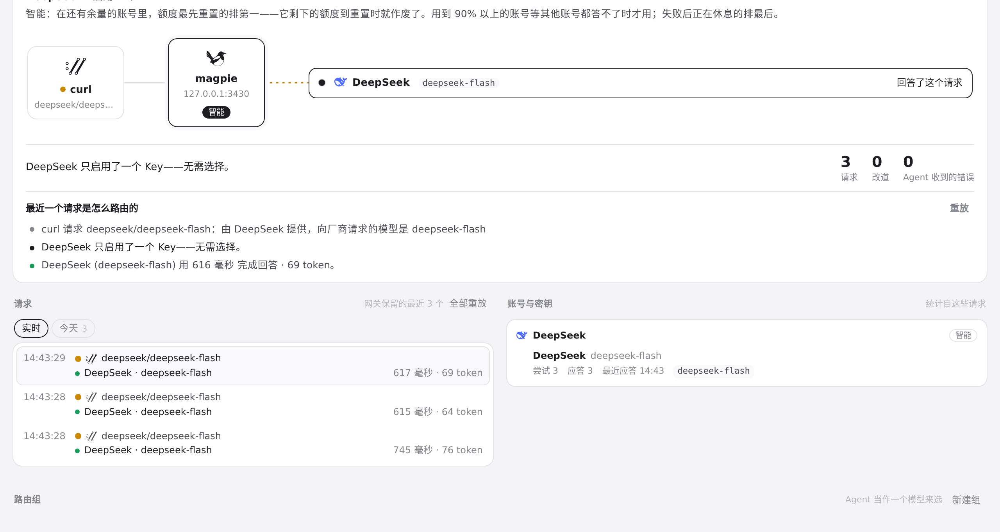
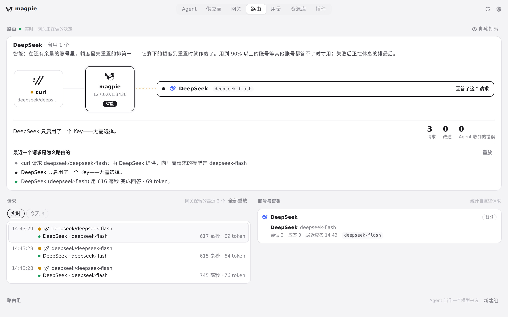

#284 界面预览
commit 96247a7 · 回到 PR · 这个 PR 在路由组编辑器里新增了一行「输入类型」（自动 / 文本（必选）/ 图片）并带说明文字，在路由组行和选择器里的子组旁边显示输入摘要；路由规则里的「包含图片」补了提示与 aria-pressed，保存时一并带上 family、context 与 input。
红线是鼠标走过的轨迹，红色圆环是一次点击；底部文字是这一步在做什么。空格暂停，← → 逐段查看。
新建组并声明输入类型 · 新建组编辑器里的「输入类型」一行和它下面的说明
新建组并声明输入类型 · 点「图片」之后的输入类型与说明文字
新建组并声明输入类型 · 点「图片」之后的输入类型与说明文字
新建组并声明输入类型 · 模型选择器里可选的模型

新建组并声明输入类型 · 选中成员后的组编辑器
新建组并声明输入类型 · 点「图片」之后的输入类型与说明文字
新建组并声明输入类型 · 重新打开后编辑器里的输入类型

选择器里子组旁的输入说明 · 模型选择器里，已有的组作为子组出现时旁边跟着的输入说明